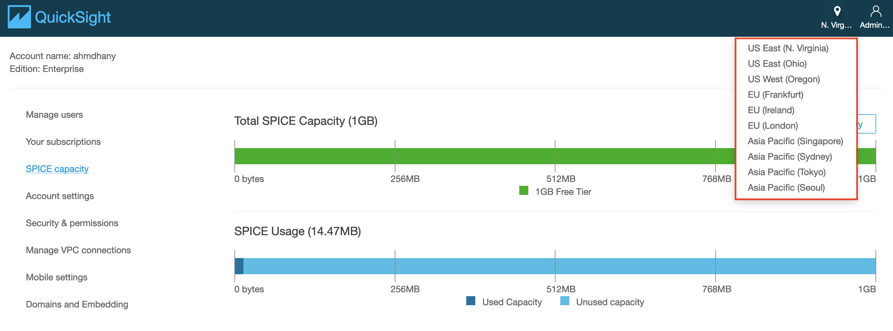
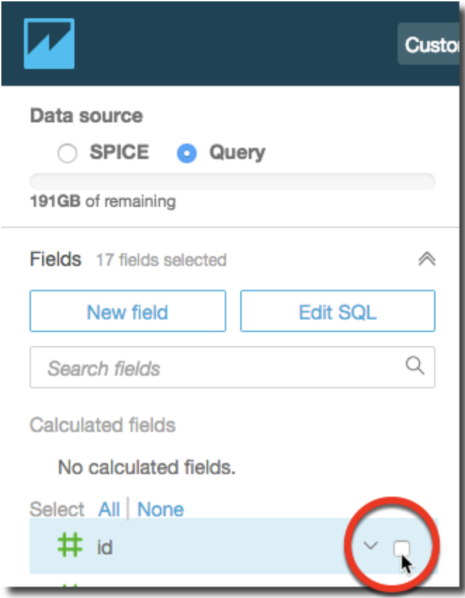
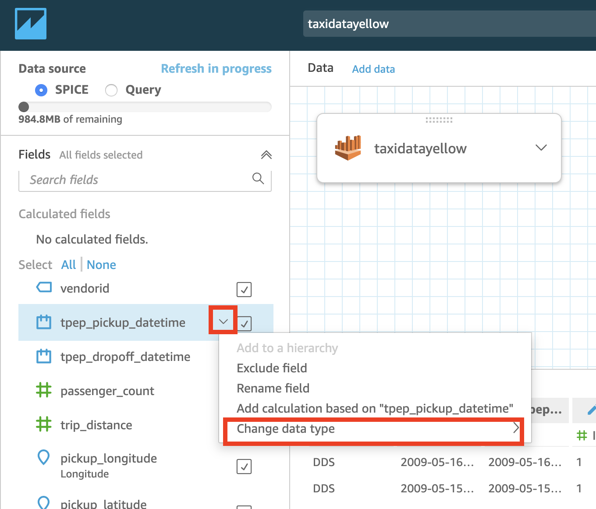
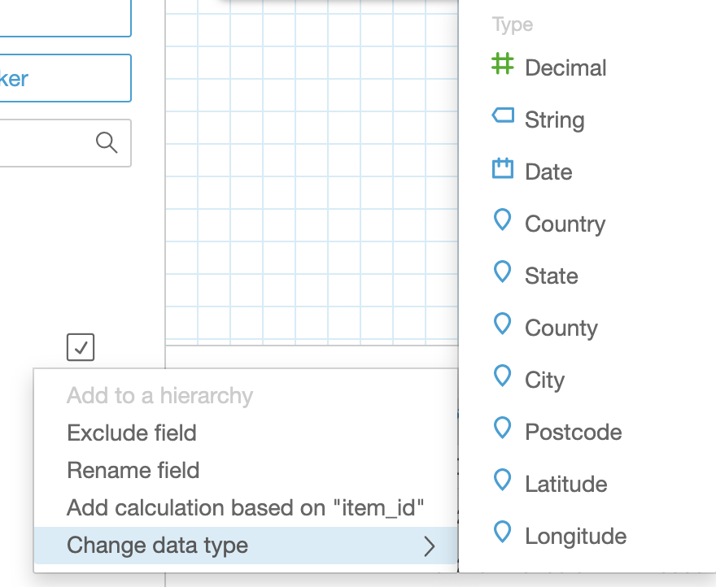
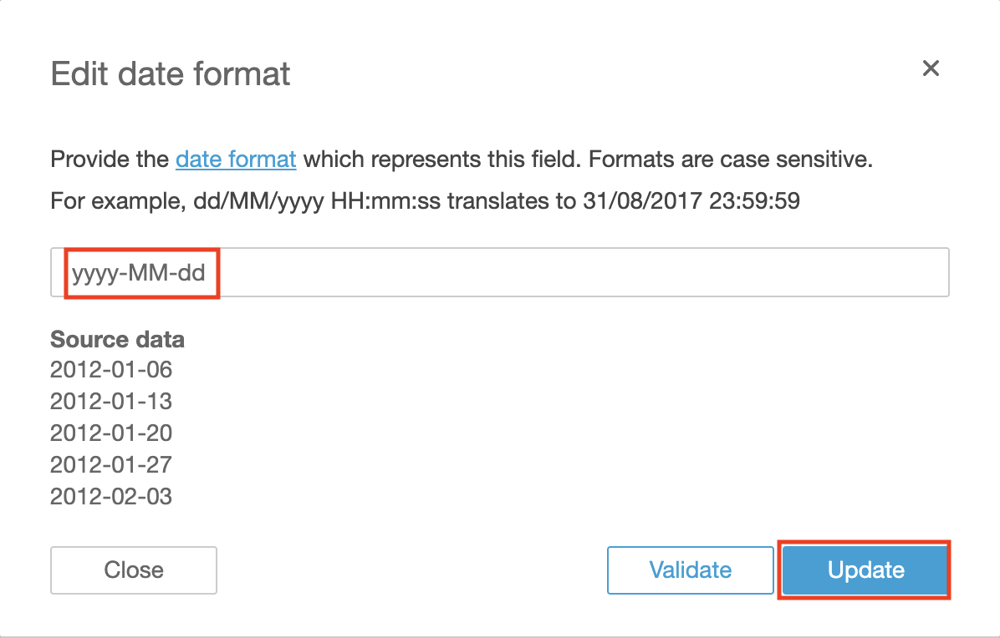
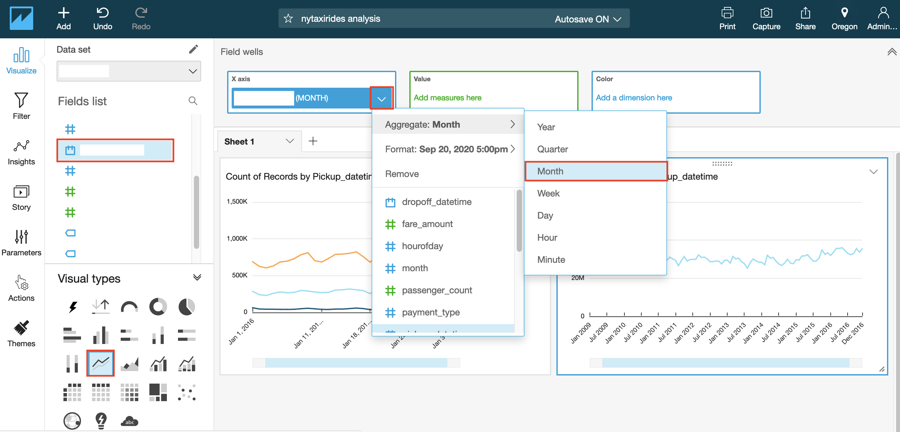
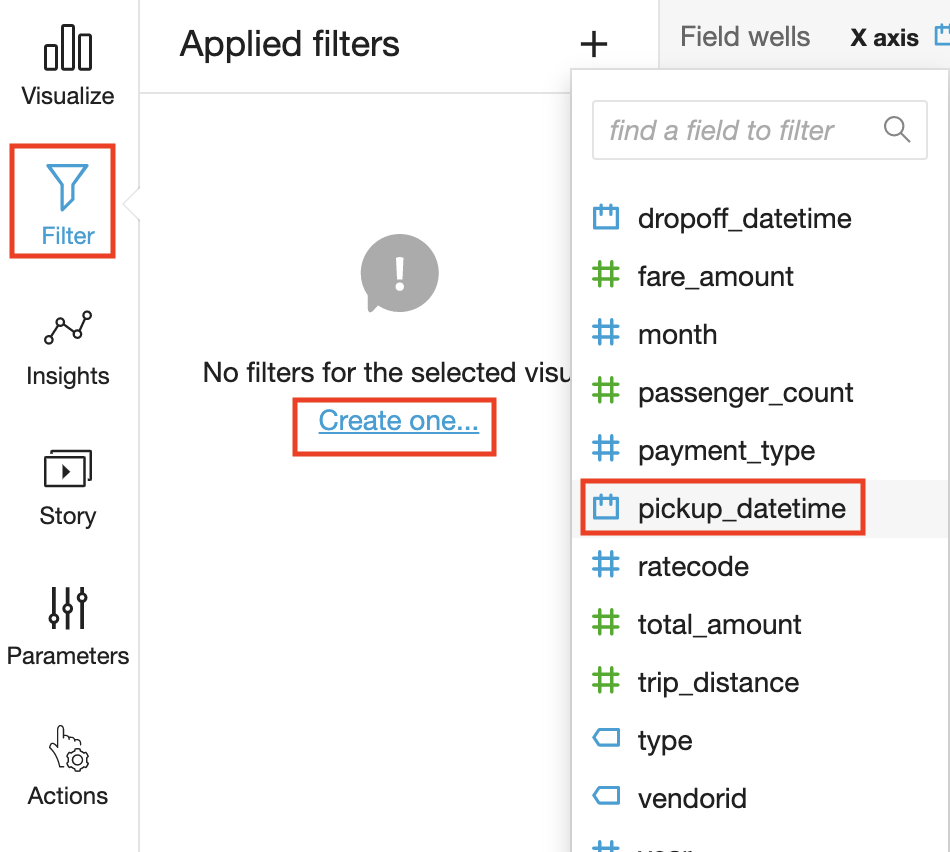
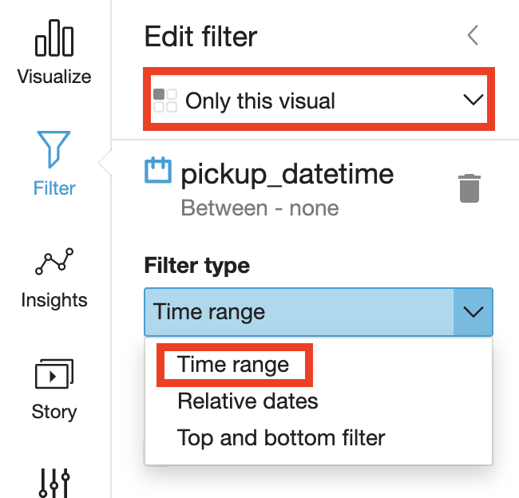
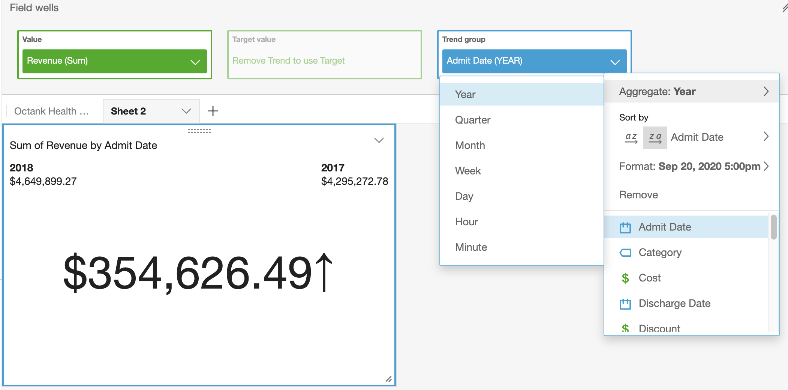

Visualization using Amazon QuickSight
- Architectural Diagram
- Signing up for Amazon QuickSight Enterprise Edition
- Some Quicksight definitions
- Configuring Amazon QuickSight to use Amazon Athena as data source
- Preparing your data
- Visualizing the data using Amazon QuickSight
- License
NOTE: Before continuing with the following steps, make sure you are in the N. Virginia Region
Architectural Diagram

In this lab you will be using the S3 bucket with your data and the Athena table you created in the previous lab.
Signing up for Amazon QuickSight Enterprise Edition
- Open the AWS Management Console for QuickSight.

- If this is the first time you are accessing QuickSight, you will see a sign-up landing page for QuickSight.
- Click on Sign up for QuickSight.
Note: Chrome browser might timeout at this step. If that’s the case, try this step in Firefox/Microsoft Edge/Safari.
- On the next page, for the subscription type select the “Enterprise Edition” and click Continue.

-
On the next page,
i. Enter a unique QuickSight account name.
ii. Enter a valid email for Notification email address.
iii. Just for this step, leave the QuickSight capacity region as N.Virginia.
iv. Ensure that Enable autodiscovery of your data and users in your Amazon Redshift, Amazon RDS and AWS IAM Services and Amazon Athena boxes are checked.
v. Click Finish.

vi. You will be presented with a message Congratulations! You are signed up for Amazon QuickSight! on successful sign up. Click on Go to Amazon QuickSight.
-
Before continuing with the following steps, make sure you are in the N. Virginia Region to edit permissions.
Now, on the Amazon QuickSight dashboard, navigate to User Settings page by clicking on the Top-Right section - see image below - and click Manage QuickSight.

- In this section, click on Security & permissions and then click Add or remove.

- Click on Amazon S3 and on the tab that says S3 buckets linked to QuickSight account.
- You have two options depending on the permissions of your account: a. Choose Select All if you have permissions on all S3 folders b. Choose the following two buckets: i. The S3 bucket(s) you store your data ii. The S3 bucket that that you store Athena query results.
NOTE: Make sure to tick the boxes for “Write permission for Athena Workgroup” as well.
- Click on Select buckets.

- When you are done doing all this, click Update to bring you back to the user settings back.
Some Quicksight definitions
What is a data source and what is a dataset?
A data source is an external data store and you use it to access the data in this external data store eg. Amazon S3, Amazon Athena, Salesforce etc.
A data set identifies the specific data in a data source that you want to use. For example, the data source might be a table if you are connecting to a database data source. It might be a file if you are connecting to an Amazon S3 data source. A data set also stores any data preparation you have performed on that data, such as renaming a field or changing its data type. Storing this preparation means that you don’t have to reprepare the data each time you want to create an analysis based on it.
What is an Analysis, a Visual and a Dashboard?
An analysis is a container for a set of related visuals and stories, for example all the ones that apply to a given business goal or key performance indicator. You can use multiple data sets in an analysis, although any given visual can only use one of those data sets.
A visual is a graphical representation of your data. You can create a wide variety of visuals in an analysis, using different datasets and visual types.
A dashboard is a read-only snapshot of an analysis that you can share with other Amazon QuickSight users for reporting purposes. A dashboard preserves the configuration of the analysis at the time you publish it, including such things as filtering, parameters, controls, and sort order. The data used for the analysis isn’t captured as part of the dashboard. When you view the dashboard, it reflects the current data in the data sets used by the analysis.
Configuring Amazon QuickSight to use Amazon Athena as data source
For this lab, you will need to choose the region where your data resides.

-
Click on the region icon on the top-right corner of the page, and select the region where your data resides.
-
Click on Datasets in the left menu to review existing data sets.
-
Click on New dataset on the top-right corner of the web page and review the options.
-
Select Athena as a Data source.

-
Enter the Data source name (e.g. AthenaDataSource).
-
Select the Athena workgroup you created specifically for QuickSight. Then Validate the Connection.

-
Click Create data source.
-
Choose curated database you created then choose the table you need to visualize its data.
-
Choose Select.
-
Choose to Directly query your data then click Visualize
Alternative Option
You can choose to create a dataset using S3 as your data source. For this:
- Make sure you have granted Amazon QuickSight access to any Amazon S3 buckets that you want to read files from.
- Create a manifest file to identify the text files that you want to import. Supported Formats for Amazon S3 Manifest Files
Preparing your data
- You can edit an existing data set to perform data preparation. To edit a data set from the Analysis page, choose the small edit icon in the top left above Fields list. This should open list of data sets in this analysis. Choose the data set to edit and click on the three dots on the right of the data set chosen, then click Edit. The data set opens in the data preparation page.

-
Select the fields that you will use for the visualization. 
-
We suggest that you pick two - three columns from your data set that meet the following criteria:
- The first column is a date column (can be year, month or day. Usually marked by calendar icon in Fields list on the left)
- The second column is a quantifiable number (revenue, count, distance, etc. Usually marked by a green hash #)
- The third column has categorical value, which means it has specific limited set of values (type, category, etc. Usually marked by ticket icon)
- Optional - Change the data type. You can change the field’s data type in one of the available data types.
-
Press over the arrow on the right side of the field you want to modify 
-
Choose one of the available data types 
-
You can also modify the format of your date field(s) into one of the supported formats. 
-
Once you finish your edit, press the Save and Visualize button on top of the screen.

Visualizing the data using Amazon QuickSight
Now that you have configured the data source and prepared the dataset to work with, we will start by forecasting values in future dates based on your sample data.
Forecast Monthly Trend for your Quantity Column
- Under the Fields list, select your Date column for x-axis by clicking on the field name.
- Change the visual type to a line chart by selecting the line chart icon highlighted in the screenshot below under Visual types.
At this point, the Y-axis of the visual will be populated automatically with count of records that match each date individually. You can keep it that way and do forecasting for count of records, or choose another quantity attribute from Fields list to populate Y-axis automatically and have more meaningful forecast.
Before viewing the forecast, you can choose the level of aggregation you want for your date column to populate X-axis by year, month or day. 4. Click on the date field name in top Field Wells bar to reveal a sub-menu. 5. Select Aggregate:Month to aggregate by month.
You can also use the slider on the X-axis to select the range of values to appear in the graph.

- Click arrow in top right corner of the visual and select Add forecast.


If you receive an error, try to use Forecast properties panel that opens at left, customizing Periods backward value to match your number of data points.
NOTE: Make sure your Y-axis is assigned to a quantity column before proceeding.
Adding Filters
You can apply filters to both regular and calculated fields, which include text, numeric, and date fields. Let’s apply a date filter:
-
Choose Filter on the tool bar.
-
On the Applied filters pane, choose Create one, and then choose a date field to filter on. 
-
Choose in which visual the filter will apply and choose the filter type from the dropdown list. 
-
Choose a comparison type.

-
Enter date values.

-
Choose Apply.
Visualize Month over Month Quantity
- Add a new visual by duplicating the previous visual. Click on visual top right arrow and select Duplicate visual.
- Select KPI as the Visual Type (bottom left of the screen).
- In the field wells, click arrow in Date column to change the aggregation level to Month or as needed.

- Now select format visual by clicking on arrow on top right corner of the KPI graph.
- Select Different as percent(%) under comparison method on the left.

Review ML Insights
- Click the ‘Insights’ menu on the left. Notice all the suggested insights QuickSight has generated based on what has been built so far!
- Hover over any of the insights and click the ‘+’ to add it to the dashboard.

NOTE: You can customize the narrative by clicking on top right arrow of the visual and selecting Customize narrative.
Note: The interesting outlier in the above graph is that on Jan23rd, 2016, you see the dip in the number of taxis across all types. Doing a quick google search for that date, gets us this weather article from NBC New York

Using Amazon QuickSight, you were able to see patterns across a time-series data by building visualizations, performing ad-hoc analysis, and quickly generating insights.
License
This library is licensed under the Apache 2.0 License.